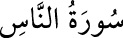

114- en-NÂS SÛRESİ
Sûre ismini, ilk âyetinde geçen ve “insanlar” mânasına gelen “nâs” kelimesinden
almıştır. Aynca “Kul eûzû bi rabbi’n-nâs” ve Felâk sûresiyle birlikte
“Muavvizeteyn”, “Mukaşkışeteyn” isimleriyle de zikredilmektedir. Altı âyet olup
Medine’de nâzil olmuştur.